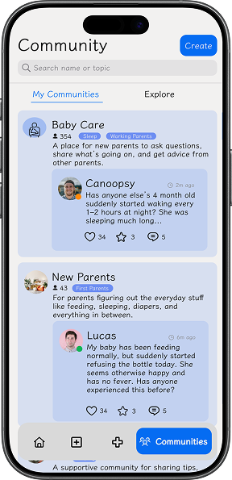
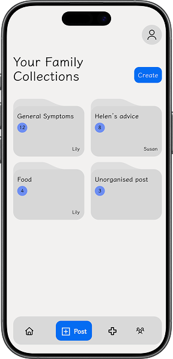
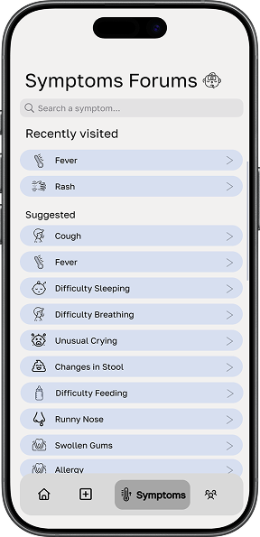
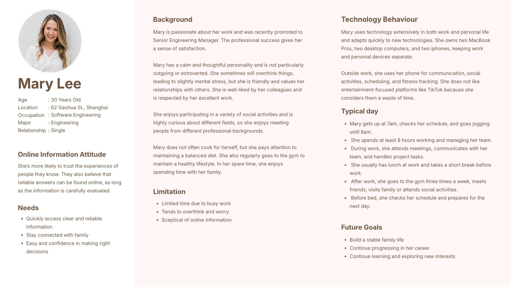
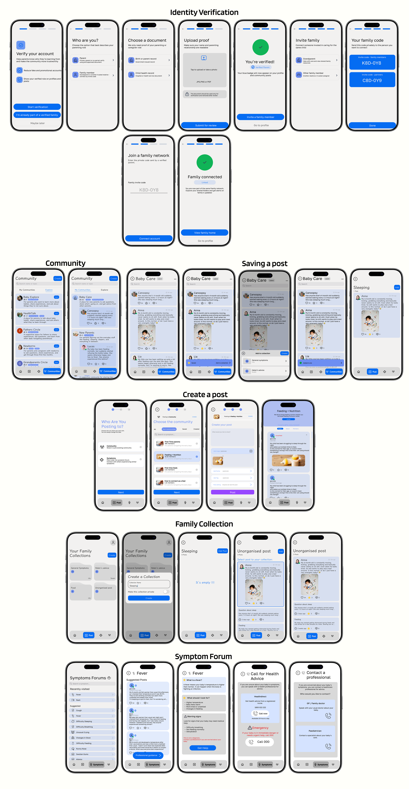

BoardKit - A Board Game Assistant
CoCare is a mobile community where parents and caregivers can share experiences, find reliable information and support each other. (Replace with your own intro.)
CoCare meets these needs through three connected features: a verified community, categorised collections and a family network.

Design Concept

Verified Community
It gives parents and caregivers peace of mind when discussing parenting challenges and learning from others in similar situations. Users go through a verification process before they can post, which helps to make sure that the people contributing to discussions are genuine parents or caregivers.

Family Network
Once verified, a parent can generate invite codes for their partner, grandparents and other trusted caregivers, who join the family network without having to verify separately. Members share access to the family’s saved collections, where everyone sees the same information and can add posts they find useful.

Symptoms Forums
The Symptoms Forums help caregivers make sense of their baby’s symptoms and behaviours. Instead of searching broadly online, users can efficiently browse discussions organised around specific infant symptoms, similar to the communities.
Persona

Wireframe
